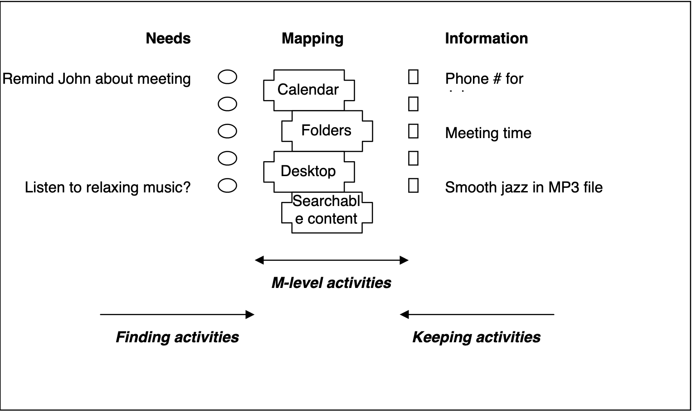

Info & Interaction Design: Personal Information
Mick McQuaid
2022-10-12
Week EIGHT
Personal information
Information can be controversial to define. Widespread agreement exists, though, about some properties and uses of information.
What is personal information?
Discuss!
- With whom it is shared
- Scope of sharing (doctor, spouse, heirs)
- Importance of information (passwords)
- Time value of information (living will, power of attorney)
- Are the URLs you bookmark personal information?
Definitions from NSF
- In 2005, the National Science Foundation sponsored a workshop on Personal Information Management, attended by many scholars publishing in that field
- Information from it (and several subsequent workshsops) was saved at PIM Resources
- It was two years before the iPhone irrevocably changed the landscape of personal information environments
- Much of the discussion, though, was technology independent and has lasting value
- The next few frames contain definitions from that workshop
Some definitions
- Information (they punted on this one!) (remember our definitions from day one)
- Information item - a packaging of information, such as an email or webpage
- Information form - classification of information items by the tools used to manipulate them
More definitions
- Personal information
- information kept for personal use
- information about a person but possibly kept by others
- information experienced by a person
Yet more definitions
- PSI \(\Rightarrow\) Personal Space of Information: all the personal information of one person
- PIE \(\Rightarrow\) Personal Information Environment: a collection of personal information and the tools to manipulate it, such as an office or a smartphone
- PIM (Lansdale 1988) the methods and procedures by which we handle, categorize, and retrieve information on a day-to-day basis
- PIM (Barreau 1995) system developed by or created for an individual for personal use in a work environment
PIM Activities
- Keeping
- Finding and Re-finding
- M-level activities, where M stands for either meta or mapping or maintenance plus organization
Information and needs
History
- Physical compartments for scrolls and parchments
- Benjamin Franklin wrote about his struggles with it
- Vanevar Bush wrote “As we may think” in 1945
- Lansdale coined the term in 1988
Personal information systems
Extensive research over the past thirty years, some of it by Tom Malone at MIT and Susan Dumais at Microsoft Research, as well as our own Jacek Gwizdka, has explored how people organize personal information.
Two aspects of personal info
- The knife analogy
- Filers and pilers
Knives in the home
- You’ve just won a complete set of knives
- WHere to put them?
- One cabinet for knives?
- Distribute them throughout the home
- Raises question of task context
Filing: using hierarchies to organize information
Filing refers to organizing items according to categories or classifications or clusters. (Researchers define these three words differently.)
Piling: using tags to organize information
Piling refers to dumping information where it is most convenient. The piler makes no effort to move information around. Instead, the piler usually uses tags of some kind to find information. The piler may create these tags or take advantage of existing tags.
Best Practices
Exercise: share best practices
- Form an ad hoc group of about four.
- Share a google doc between you four and me.
- Each member of the group writes three paragraphs describing your personal information process: (1) what you do, (2) what works well about it, and (3) what does not work well about it.
- Discuss the resulting paragraphs
- Write two paragraphs as a group describing (1) what strengths you agree on, and (2) what weaknesses you agree on. An optional third paragraph describes your disagreements.
Readings
Wikipedia does a great job on PIM!
Wikipedia documents the following
- Senses of personal information
- Personality, mood, and emotion
- Related activities and areas
Six senses of personal
- Owned by me
- About me
- Directed toward me
- Sent / posted by me
- Experienced by me
- Relevant to me
Personality, mood, and emotion
- Studies are divided on whether personality predicts personal information management
- Operating system is argued by one study as more predictive
- Personal information management affects mood and is affected by it
- Anxiety is typically expressed with respect to PIM
Related activitie and areas
- Cog psych and cognitive science
- HCI and human information interaction
- Group information management
- Data, information, and knowledge management
- Time and task management
- Personal network management
Personal knowledge management
Hacker News has repeatedly visited the issue of personal knowledge management (PKM) with discussions of advice on how to accomplish it. It is instructive to read several of these discussions to see what changes and what remains the same over time.
Example: nb
- nb is on github
- Described there as “a command line and local web note‑taking, bookmarking, archiving, and knowledge base application”
- Discussed on Hacker News yesterday
- Features: open source, plain text data storage, encryption, filtering, pinning, tagging, search, Git-backed versioning and syncing, Pandoc-based conversion, wiki-style linking, terminal and gui web browing, inline images, todos with tasks, notebooks, folders, color themes, plugins
Example: nb (continued)
- May need smartphone companion (or may be able to use existing smartphone apps, such as Working Copy or Box)
- Not yet widely discussed on Hacker News
- Is popularity important?
- Is maintenance important?
Exercise: PKM investigation
- Divide into groups of about four.
- Identify an online discussion of PKM.
- Find the most popular examples of PKM.
- Post the list to a google doc created by me.
- Investigate them and report to the class, unless your list conflicts with someone else’s, in which case, choose different PKMs.
Personal Information Curation
Whittaker (2011)
This review of prior research in information science addresses the paucity of work on curation as opposed to consumption.
Whittaker asserts that people seek new information, but that information science is largely silent on what they then do with it.
Whittaker describes a few studies showing that people spend an inordinate amount of time and energy curating personal information.
Whittaker (2011) (continued)
Personal information considered includes documents, email, photos, and web pages.
Many people spend a long time managing it, even though they rarely exploit it.
The curation lifecycle proposed consists of keeping, managing, and exploiting personal information.
Exploitation is conducted via search or navigation, usually navigation.
Exploitation depends, in part, on information uniqueness and the spectrum from informative vs action-oriented items.
References
END
Colophon
This slideshow was produced using quarto
Fonts are League Gothic and Lato